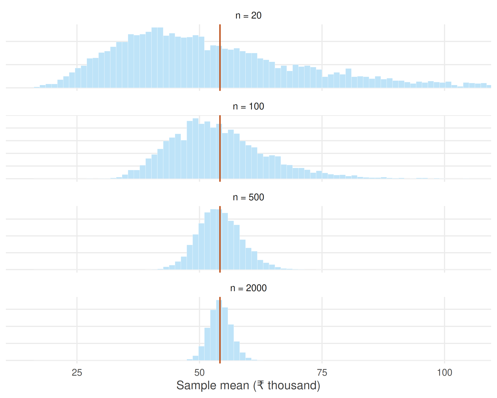

1.5 Why do larger samples give more reliable answers?
What determines how much they vary?
Figure 1.5 answered one important question. Repeating the survey many times does not produce wildly different sample means. Instead, the sample means cluster around the population mean.
A natural question follows. What determines how much they vary?
One possibility is the size of the survey itself. Intuition suggests that a survey of twenty workers should produce averages that vary much more from one survey to the next than a survey of two thousand workers. But how much difference does sample size really make?
To find out, let us repeat the experiment from the previous section several times. Instead of fixing the sample size at 2,000 workers, we consider surveys of different sizes. For each sample size we draw one thousand independent samples and compute the average annual earnings.
set.seed(3)
earn <- workers$annual_earnings
sizes <- c(20, 100, 500, 2000)
by_size <- do.call(rbind, lapply(sizes, function(n) {
data.frame(n = factor(paste("n =", n), levels = paste("n =", sizes)),
m = replicate(4000, mean(sample(earn, n, replace = TRUE))))
}))
Figure 1.6: Sampling distributions of the sample mean for different sample sizes.
The pattern is unmistakable.
When the sample contains only a small number of workers, the sample means are widely dispersed. Some surveys produce averages well above the population mean, while others fall well below it. The averages vary substantially from one survey to the next.
As the sample size increases, the sampling distribution becomes progressively narrower. The sample means remain centred at the population mean, but they fluctuate much less. Large departures from the population mean become increasingly uncommon, while averages close to the population mean become increasingly likely.
#> n = 20 n = 100 n = 500 n = 2000
#> 22998 9973 4433 2252This behaviour reflects a simple idea. Every sample contains chance variation. Some samples happen to include more high-income workers than average, while others include more low-income workers. In a small sample these random differences have a noticeable effect on the average. As the sample grows, unusually high and unusually low observations increasingly offset one another, and the sample mean settles closer to the population mean.
The behaviour we have just observed is not merely an empirical regularity. It is one of the most fundamental results in probability theory and forms the foundation of statistical inference. It is known as the Law of Large Numbers.
In informal terms, the Law of Large Numbers states that as the sample size increases, the sample mean gets closer and closer to the population mean. Large samples do not eliminate randomness, but they reduce its influence. Although no single survey is guaranteed to produce the correct answer, larger surveys are increasingly likely to do so.
The Law of Large Numbers explains why surveys, opinion polls, clinical trials and economic censuses can provide reliable information about populations without observing every individual. The key is not that they observe everyone, but that they observe enough.
Real demonstrations of the Law of Large Numbers are surprisingly hard to find. The law concerns what happens when the same random process is repeated a great many times, and few processes in economic life are repeated identically enough, often enough, for the convergence to be visible.
The cricket toss is an exception. Before every international match a coin is tossed, and over nearly a century and a half some teams have accumulated thousands of these tosses while others have played only a handful.
toss <- read.csv("data/cricket-toss.csv")
keep <- c("team", "span", "matches", "pct_toss_won")
# the most and least fortunate teams, and the most experienced
rbind(head(toss[order(-toss$pct_toss_won), keep], 2),
head(toss[order( toss$pct_toss_won), keep], 2),
head(toss[keep], 3))#> team span matches pct_toss_won
#> 90 Greece 2019-2024 15 80.00
#> 88 Cook Islands 2022-2025 17 70.59
#> 94 Africa XI 2005-2007 6 16.67
#> 91 China 2023-2024 11 27.27
#> 1 England 1877-2025 2124 49.25
#> 2 Australia 1879-2025 2116 51.23
#> 3 India 1932-2025 1926 49.58Greece has won 80% of its tosses and Africa XI barely one in six, while England, after 2,124 matches, sits at 49.2%. Nobody is luckier than anybody else. The teams with extreme records are simply the teams that have played few matches.
That is the Law of Large Numbers, and the agreement with theory is close. If the toss is fair, a team with \(n\) matches should have a toss-win percentage scattered around 50 with a standard deviation of \(50/\sqrt{n}\) percentage points. Restricting attention to teams above a given number of matches:
lln_toss <- t(sapply(c(0, 50, 100, 200, 500), function(m) {
x <- toss[toss$matches >= m, ]
c(min_matches = m,
teams = nrow(x),
observed_sd = sd(x$pct_toss_won),
predicted = sqrt(mean((50 / sqrt(x$matches))^2)))
}))
round(lln_toss, 2)#> min_matches teams observed_sd predicted
#> [1,] 0 94 8.46 7.91
#> [2,] 50 49 4.92 4.77
#> [3,] 100 27 3.03 3.16
#> [4,] 200 16 2.10 2.05
#> [5,] 500 10 0.85 1.32The spread of toss-win percentages falls from 8.5 percentage points across all teams to 0.9 among the ten most experienced — and at every step it tracks the value the theory predicts. No survey was designed and no experiment was run. The convergence is simply there in the record of the game.
Yet Figure 1.6 reveals another feature that the Law of Large Numbers does not explain. As the sample size increases, the sampling distributions not only become narrower — they also become increasingly bell-shaped. This is surprising because the underlying distribution of earnings is strongly skewed.
Why should averages of skewed data look approximately normal?
The answer is provided by an even more remarkable result: the Central Limit Theorem.